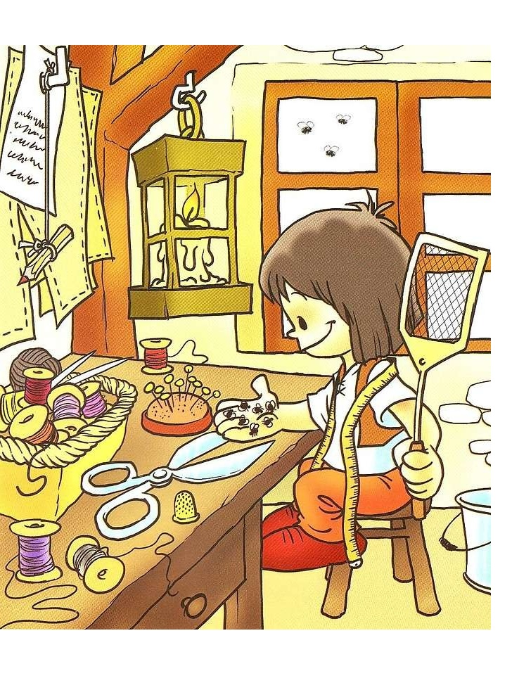
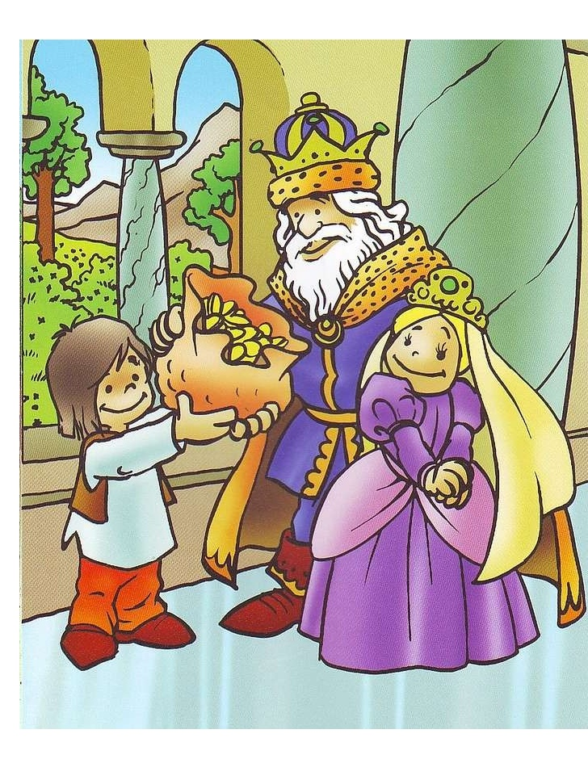

Hace muchos años, en un reino muy lejano, vivía un joven muy pobre. Era sastre. Pero casi nunca trabajaba porque nadie le hacía ningún encargo. Como le sobraba tanto tiempo, siempre estaba con sus fantasías, pensaba y pensaba las hazañas más extraordinarias. Estaba seguro de que algún día iba a ser famoso y rico.
Un día de esos de verano en que hace tanto calor, estaba en su taller soñando, como siempre. Unas moscas muy pesadas habían entrado por la ventana y se pasaban el rato zumbando y molestando a nuestro joven sastre. Se le posaban en la nariz, en las manos, en las orejas. En fin, que le estaban dando la lata. El joven estaba tan harto de las moscas que empezó a perseguirlas por todo el taller y a echarlas hacia la ventana. Pero nada, que las moscas no se iban. Estaba tan enfadado que cogió un trapo que tenía por allí, y aprovechando que las moscas se habían posado sobre una mesa, les sacudió un buen golpe. Con tanta fortuna, que siete de ellas quedaron muertas sobre la mesa.
Entonces, el joven sastre se sentó y empezó a soñar que, en realidad, había luchado contra siete feroces guerreros y que los había vencido a los siete. Y de tanto pensarlo, llegó a creer que era verdad. Se sentía como el más valiente de los caballeros del reino. Y como era sastre, pues se hizo una camisa muy bonita con un letrero en el pecho, en el que ponía «MATÉ SIETE DE UN GOLPE».
Y, con la camisa puesta, salió por toda la ciudad. La gente, que leía lo que ponía en la camisa del sastre, pensaba que había matado a siete guerreros y el sastre decía que sí que había matado a «siete de un golpe». El sastre se hizo muy famoso y en todo el reino se hablaba del Sastrecillo Valiente que había matado a siete de un golpe.
Por aquellos días, el Rey lo estaba pasando muy mal, porque dos gigantes muy crueles estaban a la puerta de su palacio y querían quitarle sus riquezas y su reino. El Rey buscaba a alguien que quisiera ayudarle. Entonces, alguien le habló del Sastrecillo Valiente y mandó a buscarlo.
Por eso, un día, aparecieron por el taller del sastre unos enviados del Rey y le pidieron que fuera a palacio a ayudar al Rey y a derrotar a los gigantes.
El sastre se asustó mucho y se arrepintió de haber sido tan soñador y de haberse metido en ese lío. Pero como no quería que nadie le llamara mentiroso y se riera de él, aceptó y se fue a luchar contra los gigantes.
Y llegó cerca del palacio llenito de miedo. En el bosque que rodeaba el palacio vio a los dos gigantes que estaban sentados a la sombra. Temblando y sin hacer ruido, se subió a un árbol para que los dos gigantes no le vieran. Como hacía mucho calor, los dos gigantes se quedaron dormidos. Entonces, el sastre tiró una piedra que golpeó a uno de los gigantes en la nariz. El gigante se despertó enfadadísimo y dolorido. Creyó que había sido el otro gigante el que le había dado la pedrada y le dio dos puñetazos bien fuertes.
Cuando los gigantes volvieron a quedarse dormidos, el Sastrecillo Valiente, tiró una piedra al otro gigante le dio en los dientes. El gigante se despertó hecho una fiera y pegó una patada al otro. Los dos gigantes se liaron a puñetazos, patadas y mordiscos.
Estuvieron peleando más de dos horas. Hasta que al fin, agotados, quedaron tumbados en el suelo sin poder moverse. El sastre echó a correr hacia palacio, gritando: Venid, venid! ¡corred! He peleado con los gigantes y los he vencido! ¡Venid a sujetarlos!
Los soldados del Rey fueron en busca de los gigantes sin creer lo que el sastre decía. Pero cuando llegaron vieron a los dos gigantes tumbados en el suelo. Los ataron con muchas cuerdas y cadenas y, con unos cables, los arrastraron y los metieron en los calabozos.
El Rey, muy contento y muy agradecido, regaló muchas riquezas al Sastrecillo que se convirtió en un señor muy poderoso. Y, además, la Princesa se casó algunos años después con el famoso Sastrecillo Valiente.
Contacta con el autor: Sebas